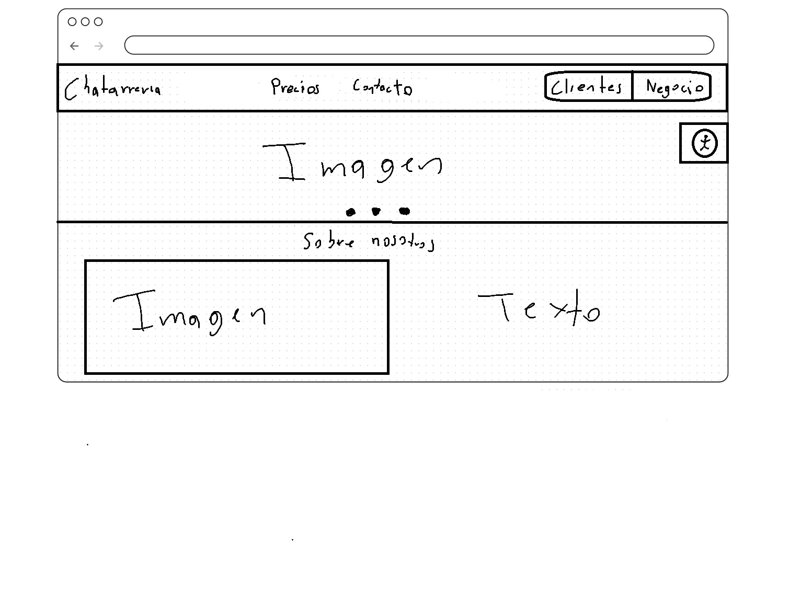
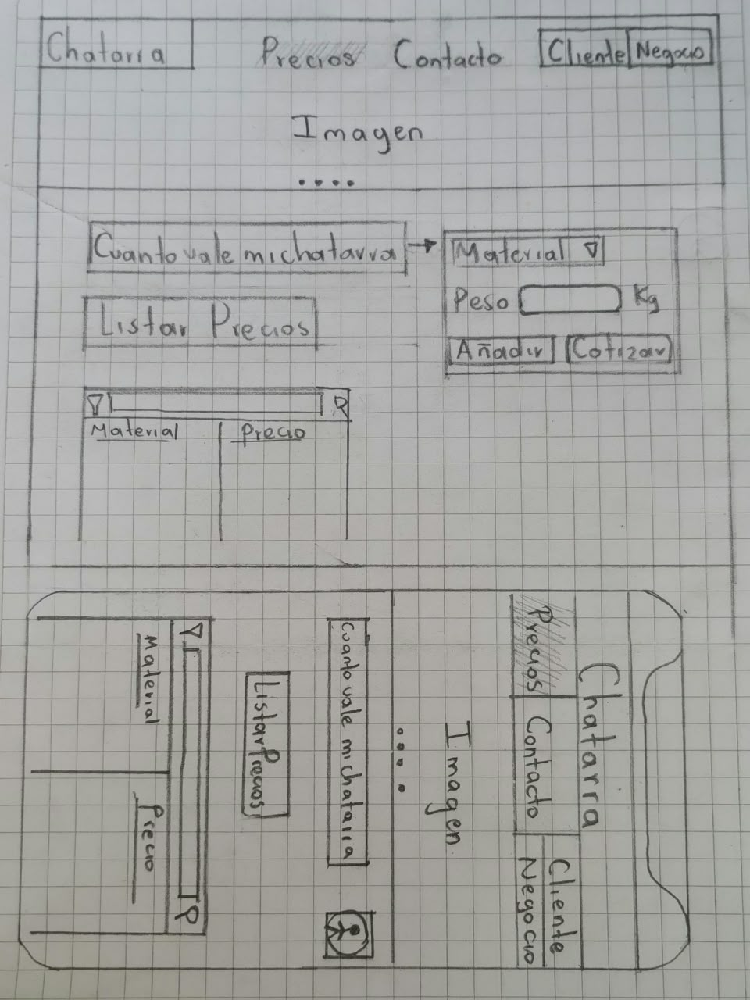
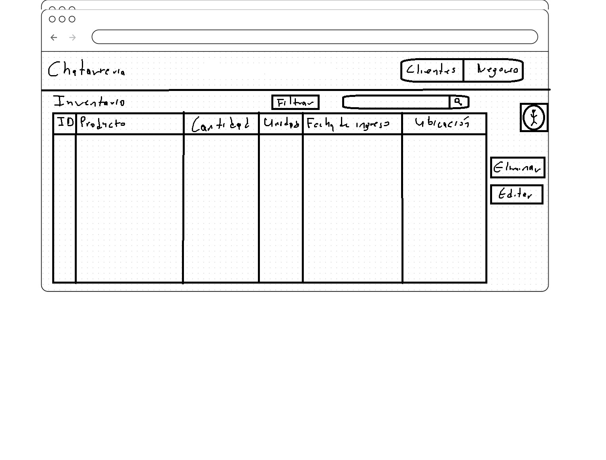
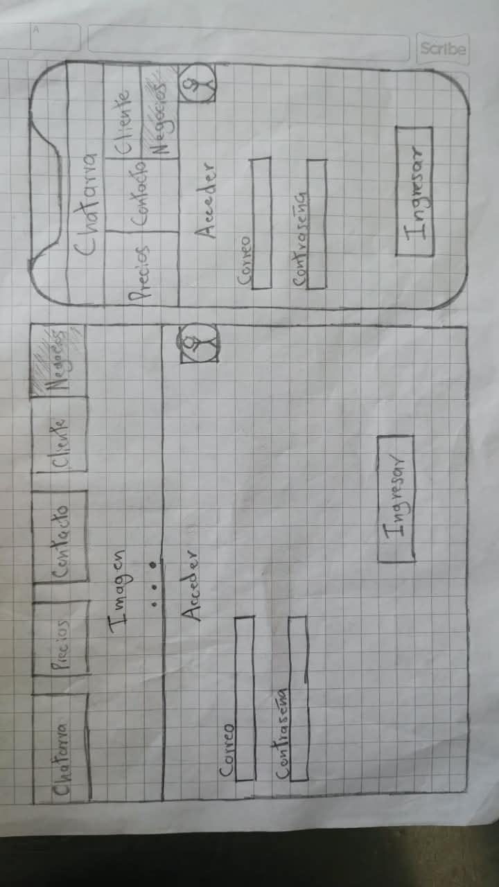
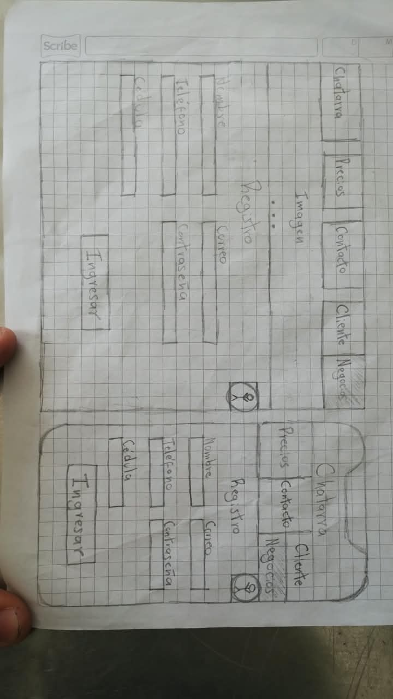
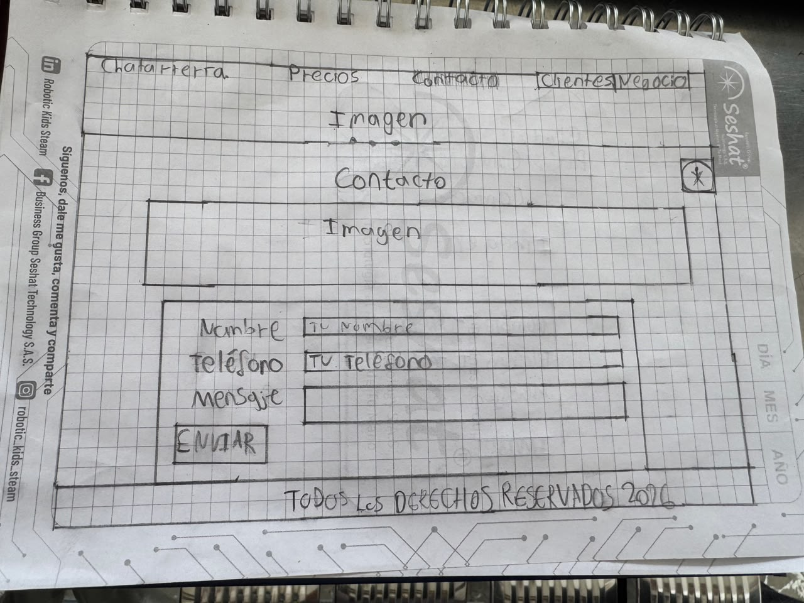
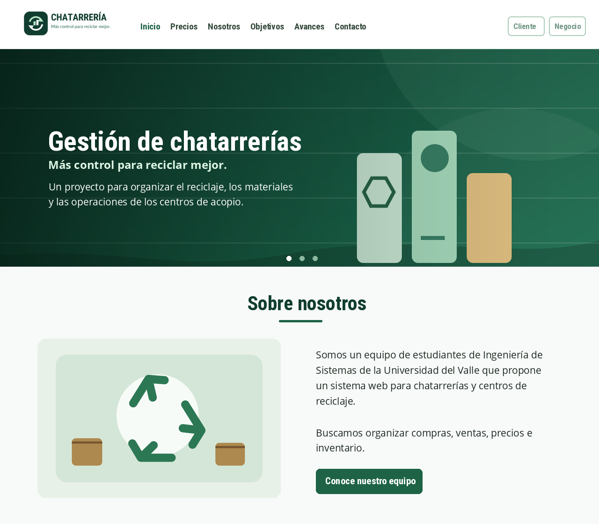
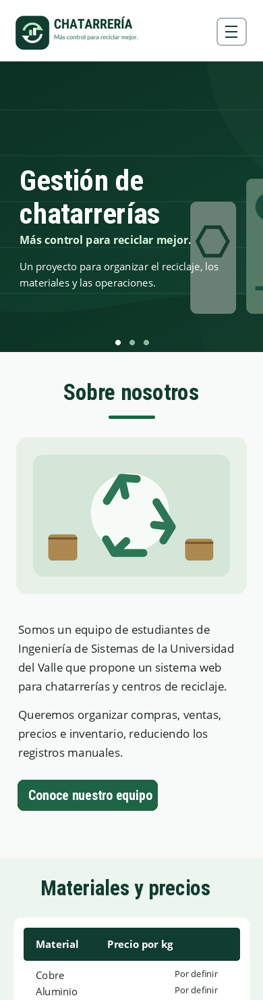

Wireframe
Página de inicio
Diseño de la portada, la navegación, el carrusel y la sección “Sobre nosotros”.
Registro de los análisis, diseños y wireframes que el equipo ha elaborado para construir la plataforma.
Estos materiales son prototipos y documentación del proyecto; no significan que los módulos privados ya estén programados.

Diseño de la portada, la navegación, el carrusel y la sección “Sobre nosotros”.

Boceto de la consulta de materiales, tabla de precios y cotización según el peso.

Propuesta de tabla para productos, cantidades, unidades, fechas y ubicación.

Diseño preliminar del formulario de correo y contraseña para usuarios autorizados.

Boceto del formulario de registro con información básica de acceso.

Wireframe de la sección de contacto. La página de contacto ya fue incorporada al repositorio por el equipo.
Elecciones de diseño aplicadas a nuestros wireframes de la chatarrería.
Ver actividad en PDFRoboto Condensed
Uso: títulos, encabezados y botones.
Su forma clara y compacta ayuda a destacar las secciones y a organizar la información sin ocupar demasiado espacio.
Open Sans · Texto de lectura
Uso: párrafos, descripciones y tablas.
Su lectura es cómoda en pantallas de diferentes tamaños y permite diferenciar el texto de los títulos.
Utilizamos verdes relacionados con el reciclaje, fondos claros y letras oscuras. Separamos los colores de botones, textos y fondos para mantener una lectura clara.
El verde se relaciona con la naturaleza y la reutilización de materiales. Los tonos oscuros sobre blanco y el texto blanco sobre verde oscuro mejoran la legibilidad.
“Más control para reciclar mejor.”
El logo identifica el proyecto con el reciclaje. El eslogan expresa la idea de organizar mejor los materiales, precios e inventarios.
Pasamos el boceto de inicio a una interfaz digital: conservamos la barra de navegación, la imagen principal con carrusel y la sección «Sobre nosotros», agregando la identidad visual y el diseño adaptable.


Jerarquía y legibilidad: títulos de mayor tamaño y peso, texto normal de aproximadamente 16 px, separación entre secciones y contraste entre fondo y texto. La navegación y el contenido se adaptan al ancho de la pantalla mediante Bootstrap.